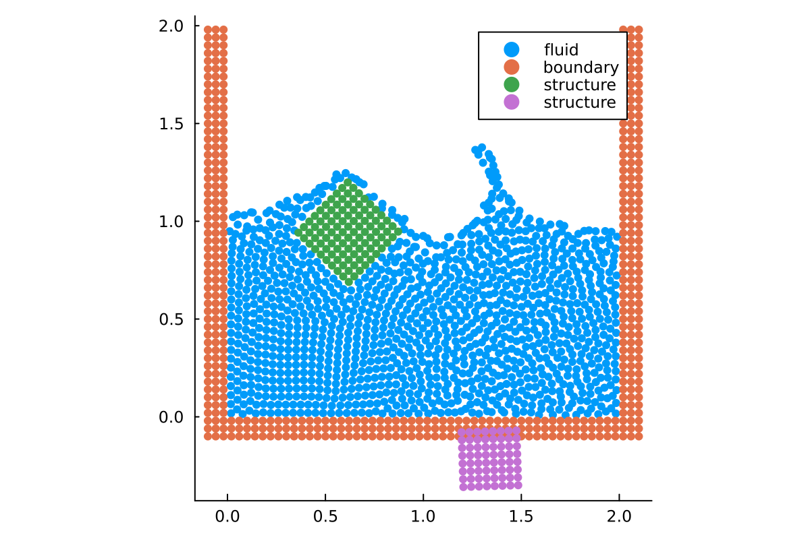

Tutorials
New to TrixiParticles.jl? Start with Setting up your simulation from scratch.
Recommended Path
- Setting up your simulation from scratch: learn the structure of a simulation file and run a complete WCSPH example.
- Modifying or extending components of TrixiParticles.jl within a simulation file: replace selected parts of an existing setup without cloning the package.
- Particle packing tutorial: build a body-fitted particle configuration for complex geometries.
Tutorials
Setting up your simulation from scratch

Build a complete Weakly Compressible SPH dam break setup from particle spacing through semidiscretization, callbacks, and time integration.
- Focus: initial conditions, systems, semidiscretization, callbacks
- Choose this if: you want the full workflow for a minimal example
Modifying or extending components of TrixiParticles.jl within a simulation file

Start from an existing simulation and replace pieces such as the smoothing kernel directly in the file you run.
- Focus:
trixi_include, custom kernels, rapid iteration - Choose this if: you want to prototype changes without cloning and modifying the package
Particle packing tutorial
Go from a geometry file to a packed particle distribution using signed distance fields together with boundary and interior sampling.
- Focus: geometry import, signed distance fields, boundary sampling,
ParticlePackingSystem - Choose this if: you need body-fitted particles for complex geometries
Fluid-structure interaction with rigid bodies

Simulate the interaction between fluids and moving rigid bodies.
- Focus: fluid-structure interaction, rigid bodies, moving boundaries
- Choose this if: you want to simulate objects moving in a fluid
See also Getting started and Examples.